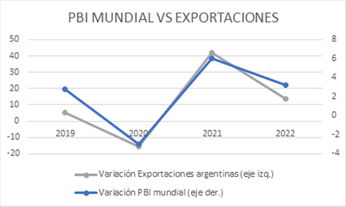
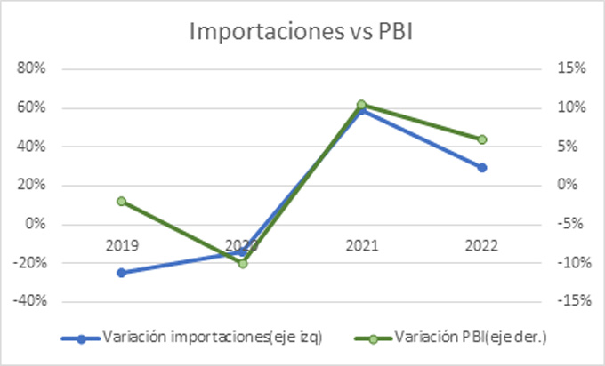

La actividad portuaria como eje del crecimiento económico
La evolución de la actividad económica argentina posee un fuerte correlato con el comercio internacional y el movimiento de mercaderías en los puertos. Es importante darle seguimiento a esta relación para entender la dinámica y determinar la política pública en aras de acompañar el aumento del bienestar nacional.
Comercio exterior y PBI: una relación estructural
El consumo y la producción argentinos están relacionados en gran medida con la interacción con el resto del mundo. De hecho, la suma de las exportaciones y las importaciones equivale a casi la mitad del PBI. Tomando como base el año 2021, las exportaciones ascendieron a 580.021,19 millones de pesos y las importaciones alcanzaron los 666.550,24 millones. El PBI del período fue de 2.756.842,74 millones. Así, la suma de importaciones y exportaciones representó el 45 % del total del PBI. Para los primeros tres trimestres de 2022, ese coeficiente ascendió al 48 %, mostrando la continuidad de la estructura.
Crecimiento mundial y exportaciones argentinas
El crecimiento económico guarda una relación profunda con el comercio internacional. En la teoría, uno de los determinantes de las exportaciones es el crecimiento del resto del mundo: a mayor ingreso en el exterior, mayor demanda de bienes y servicios domésticos. A la inversa sucede lo mismo: a mayor nivel de ingreso nacional, mayor cantidad demandada de bienes y servicios en el extranjero.
En la práctica: cuando el mundo crecía 2,8 % en 2019, las exportaciones argentinas lo hicieron un 5,4 %; en 2020, con la pandemia y una contracción mundial del 3 %, las exportaciones cayeron un 15,7 %; en 2021, con crecimiento mundial del 6 %, las exportaciones aumentaron un 42 %; y en 2022, con un crecimiento mundial de 3,2 %, las exportaciones crecieron un 13,5 %.

Importaciones y ciclo económico
Por el lado de la importación, la relación con el producto bruto interno está denominada por la propensión marginal a importar: el comportamiento de las importaciones frente a cambios en el PBI.
En los años de crecimiento —2021 y 2022— la economía se expandió 10,4 % y 5,9 % respectivamente, mientras que las importaciones aumentaron 59,10 % y 29 %. Durante el ciclo contractivo —2019 y 2020— la economía se contrajo 2 % y 9,9 %, y las importaciones cayeron 25 % y 13,80 %.

Actividad portuaria: números que acompañan
Según los datos de la Subsecretaría de Puertos y Vías Navegables, el movimiento de mercaderías a nivel nacional —tanto en carga general como contenedorizada— fue expansivo de manera permanente.
En carga no contenedorizada, tras un período de estabilidad en 2018 y 2019 —cuando el total de toneladas cargadas y descargadas se sostuvo en el orden de las 153 millones— en 2020 y 2021 el aumento fue del 5 % promedio, un dato destacable considerando que se experimentaba la contracción general por la pandemia.
En cuanto a contenedores: en 2019 el movimiento total fue de 1.642.952 TEU; en 2020 fue de 1.660.417 (1 % más que el año anterior); y en 2021 alcanzó 1.741.385 TEU, con un aumento del 4,8 % respecto de 2020.
Como corolario, la tendencia mundial también es relevante: durante los últimos 20 años, de acuerdo con los datos del FMI, el crecimiento económico mundial fue en promedio del 5,53 % por año.